Grupos altos: móveis, cinco brinquedos e fada. Nota B na inspeção interna dos itens corrigidos. Composição da fada e demais pendências continuam registradas.
Relatório final · Remoção da exportação e teste integrado · Críticos já aprovados
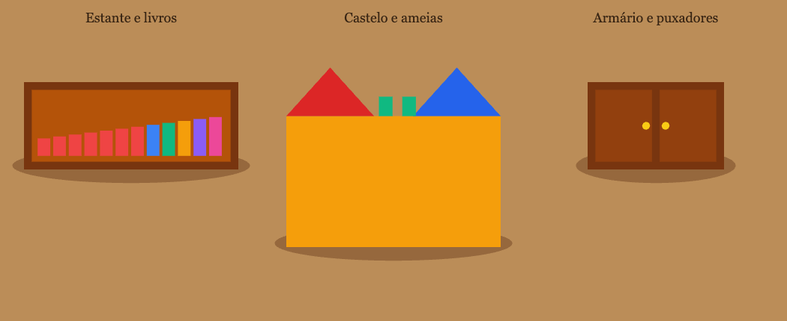
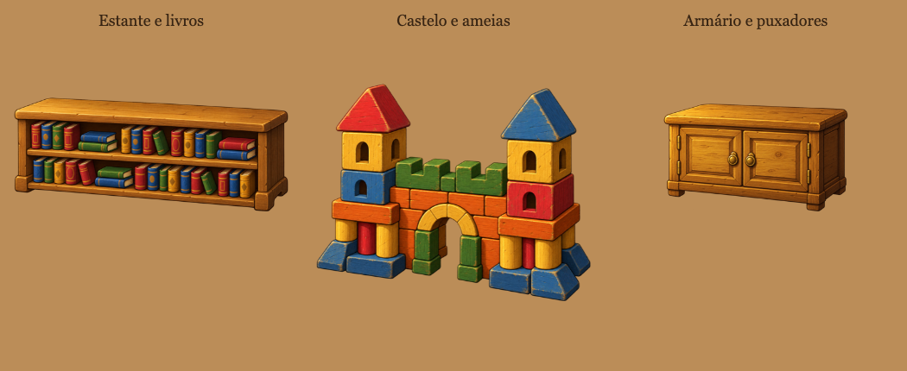
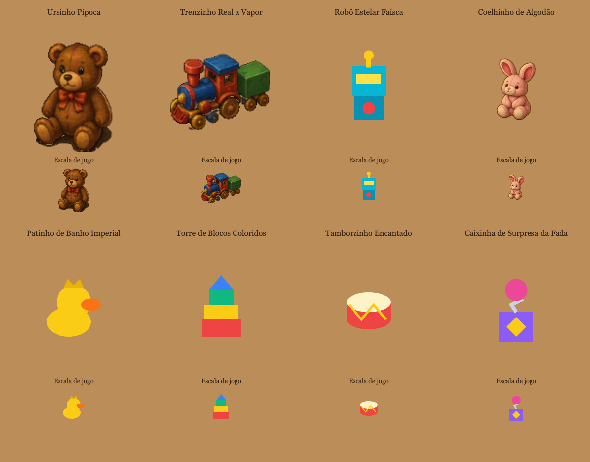
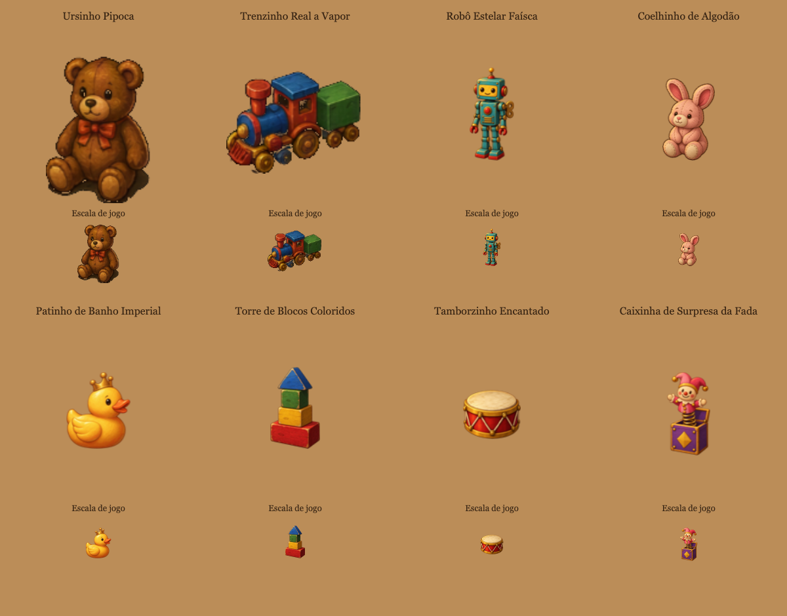
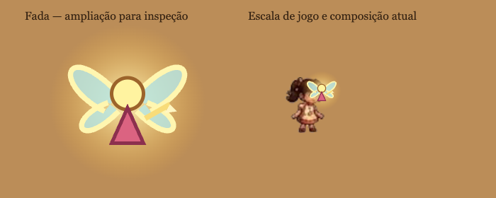
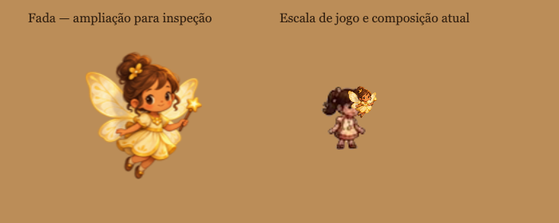
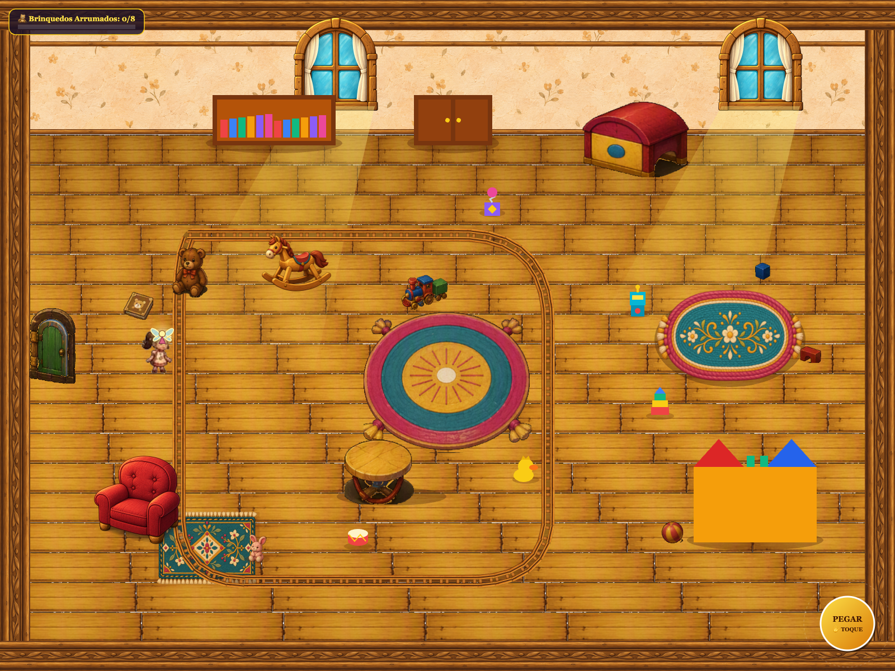
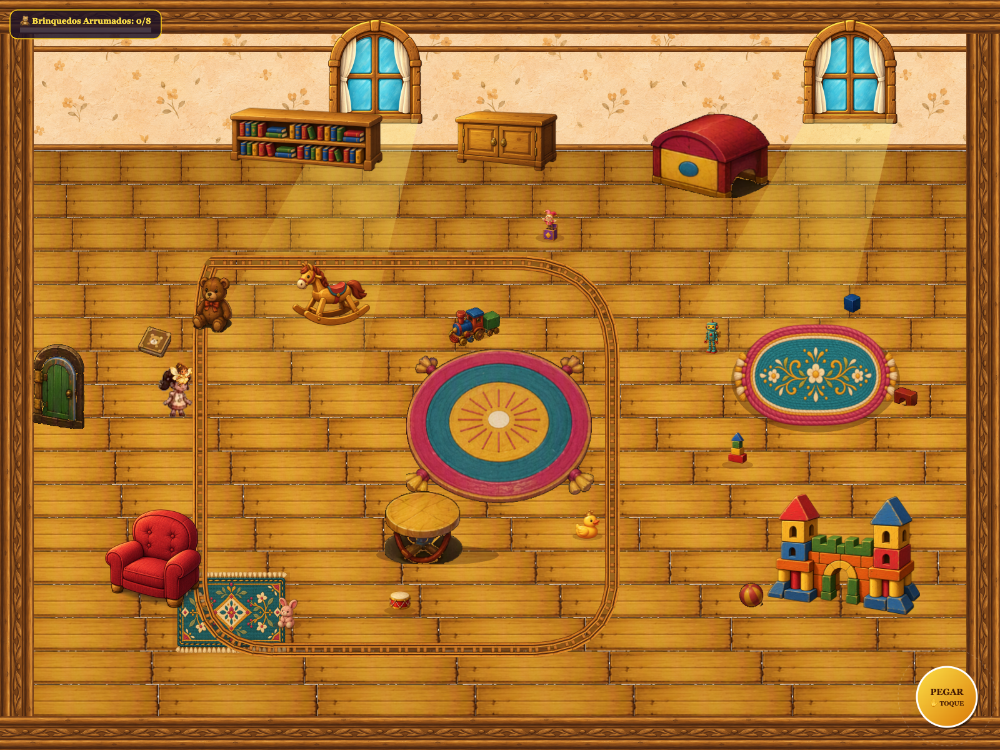
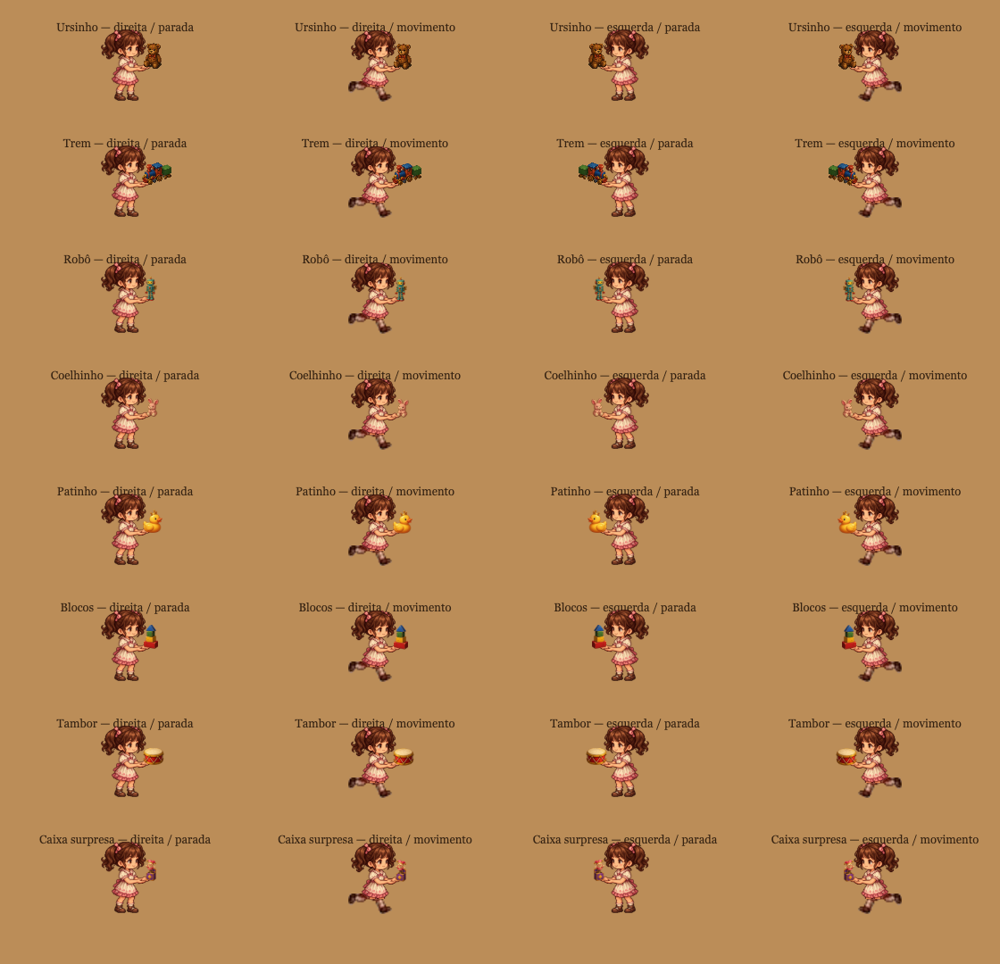
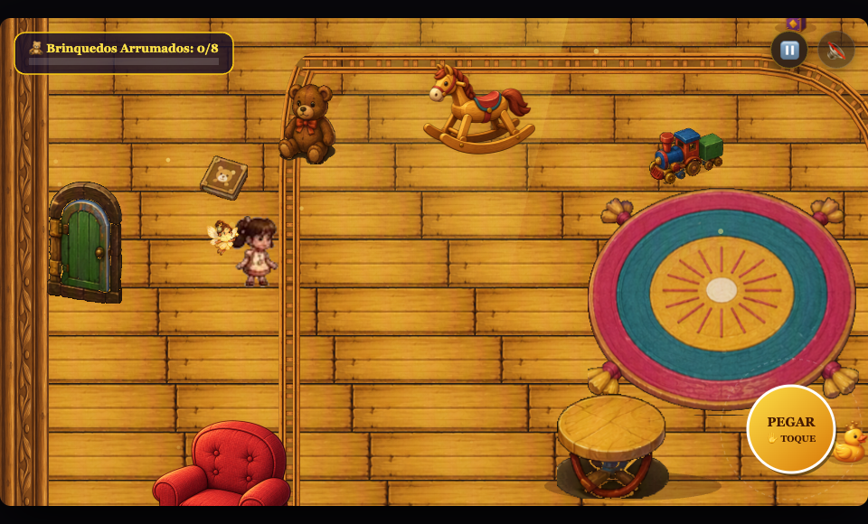
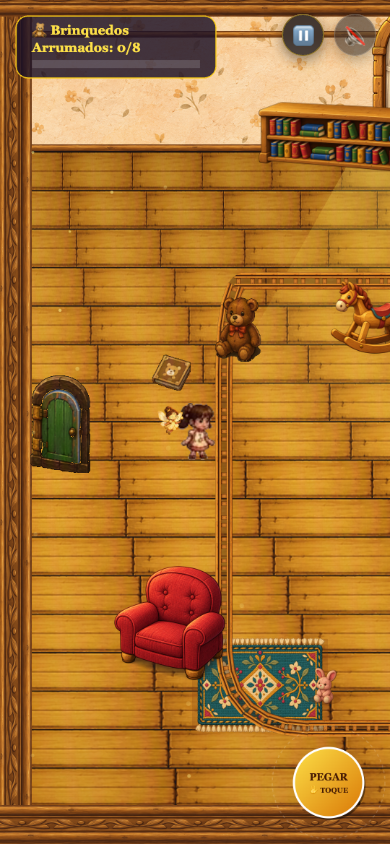
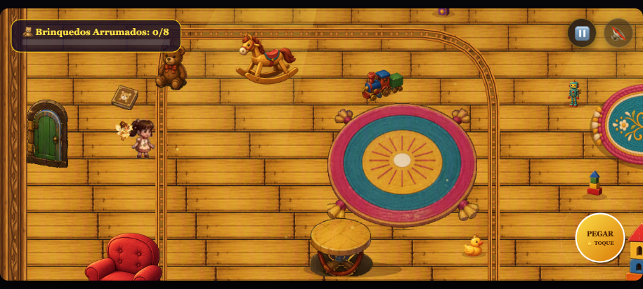